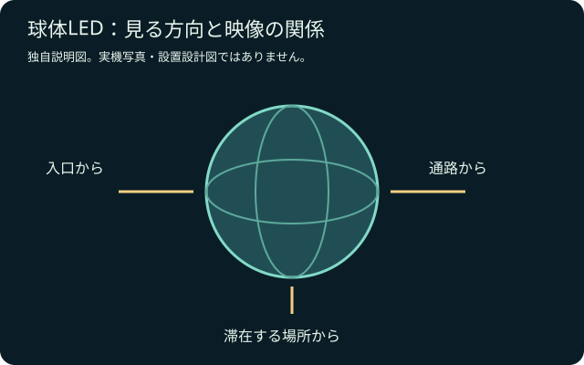

どこから見る？
入口、通路、滞在場所から見える範囲を決める。
LED ↗EQUIPMENT / 72
球体LEDディスプレイ
正面だけでなく、回り込んで楽しむ映像へ。
KEY SPECIFICATIONS
 画像を大きく見る ＋
画像を大きく見る ＋
01 / ROLE & FLOW
役割を表す説明図です。実際の配線・端子構成は案件に合わせて決めます。
02 / BEFORE YOUR BRIEF
入口、通路、滞在場所から見える範囲を決める。
文字の位置、正面、映像の継ぎ目を本番素材で試す。
搬入経路、支持部材、電源、来場者の動線を合わせる。
03 / CHOOSING THE RIGHT TOOL
展示会のアイキャッチや空間演出に。来場者が近づく方向と滞在する位置に合わせ、球面ならではの見せ方を考えます。
平面画面と同じ素材をそのまま使うと、文字や図形の見え方が変わります。球面に合わせた素材と表示設定を用意し、来場者の位置から試します。
球体の映像は、見る方向で内容が変わります。伝えたい情報を一方向に集めるか、周囲から見せるかを先に決めると、素材制作と設置計画を合わせやすくなります。搬入経路・設置面・固定方法・電源は、手配する実機の構成に合わせて担当者が計画します。
参考資料：製品取扱元の仕様案内 ↗（2026年11月5日照合）
開催日、会場、来場者の動線、表示内容、設置位置、搬入経路、支持と電源、操作担当の範囲をお聞かせください。本体・周辺機材・搬入出・設営・本番操作・撤去を分けて、必要な範囲を整理します。セットの付属品や人員が自動で含まれる表示ではありません。
04 / RELATED EQUIPMENT